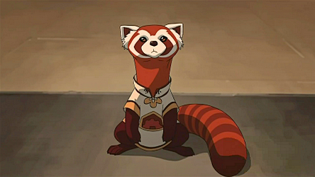

Pabu is a fictional animal known as the fire ferret found in Nickelodeon's The Legend of Korra. Creators Bryan Konietzko and Michael Dante DiMartino modeled Pabu after red pandas. In a special Nickelodeon clip, we learn that Pabu was saved from a sketchy pet store in Republic City by Mako and Bolin when they were orphaned children living on the streets. Bolin and Pabu instantly bonded, and have been inseparable ever since. Pabu can often be found hanging out on Bolin's shoulder, or happily spending time with Naga, Korra's polar bear dog.